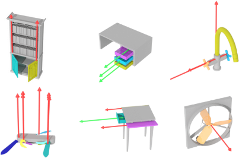
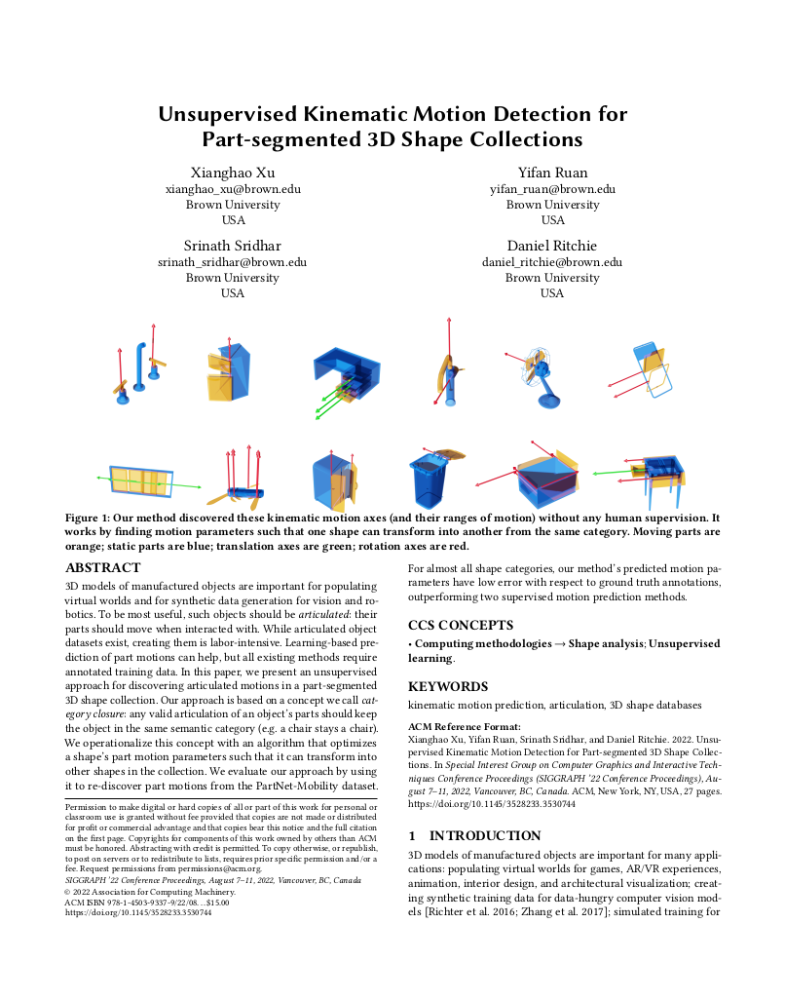

Unsupervised Kinematic Motion Detection for Part-segmented 3D Shape Collections (SIGGRAPH 2022)
Xianghao Xu, Yifan Ruan, Srinath Sridhar, and Daniel Ritchie

Abstract
3D models of manufactured objects are important for populating virtual worlds and for synthetic data generation for vision and ro- botics. To be most useful, such objects should be articulated: their parts should move when interacted with. While articulated object datasets exist, creating them is labor-intensive. Learning-based pre- diction of part motions can help, but all existing methods require annotated training data. In this paper, we present an unsupervised approach for discovering articulated motions in a part-segmented 3D shape collection. Our approach is based on a concept we call cat- egory closure: any valid articulation of an object’s parts should keep the object in the same semantic category (e.g. a chair stays a chair). We operationalize this concept with an algorithm that optimizes a shape’s part motion parameters such that it can transform into other shapes in the collection. We evaluate our approach by using it to re-discover part motions from the PartNet-Mobility dataset. For almost all shape categories, our method’s predicted motion pa- rameters have low error with respect to ground truth annotations, outperforming two supervised motion prediction methods.
Presentation Video
Files
|  |

|
|
Paper (arXiv) arXiv |
Slides |
Bibtex
@inproceedings{xu2022_unsupkinem,
author = "Xianghao Xu and Yifan Ruan and Srinath Sridhar and Daniel Ritchie",
title = "Unsupervised Kinematic Motion Detection
for Part-segmented 3D Shape Collections",
booktitle = "SIGGRAPH",
year = "2022"
}
Source Code
Acknowledgements
This work was funded in part by NSF Award #1941808. Daniel Ritchie is an advisor to Geopipe and owns equity in the company. Geopipe is a start-up that is developing 3D technology to build immersive virtual copies of the real world with applications in various fields, including games and architecture. Srinath Sridhar was supported by a Google Research Scholar Award.